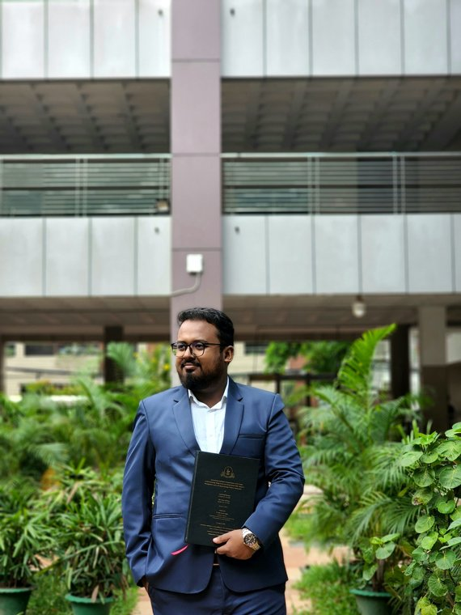
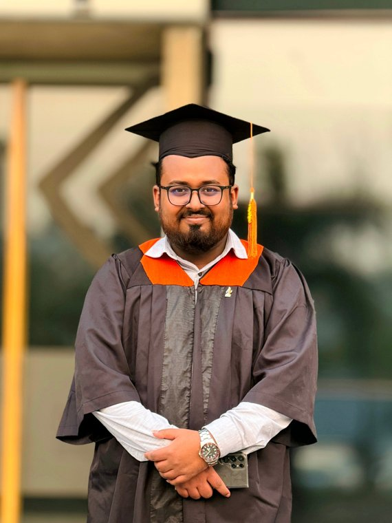

I teach machines
to look carefully.
Deep learning for visual recognition in medical imaging and agricultural and food machine vision, with a second strand on machine learning for software engineering. I build the datasets myself, and I care more about whether a result survives scrutiny than about the headline number.
Three things I work on
Models a clinician could argue with
Multi-organ CT, lung cancer across CT and histopathology, kidney disease, dermatology. Every result gets a Grad-CAM, LIME or SHAP pass, because a model that is right for the wrong reason is not usable in a clinic.
Recognition where the data doesn't exist yet
Meat, eggs, crop leaves, fruit disease, pests. Most of these problems have no public dataset for Bangladesh, so the work starts at a market stall with a camera, not at a download link.
Reading design, not just code
My M.Sc. thesis: recognising UML diagrams with deep learning and detecting design patterns with LLMs. Related work covers AI-assisted testing, lifecycle selection and vulnerability remediation.
A few projects
more under ResearchResearch
datasets, models, resultsThe pattern across almost everything below is the same. Find a recognition problem where the data does not exist, build the dataset properly, design a model for it, then put it against retrained baselines under identical conditions and check with explainability tools that it learned the right thing. Where it is useful, ship it as something people can open.
The data behind it
what I collect and curateImages per dataset, labelled with the classes each covers. The ones marked own were photographed from scratch at market stalls, field sites and in the lab. Every one uses a stratified hold-out with augmentation applied after the split, never before — the cheapest way to fake a good number is to leak augmented copies into the test set.
Does the new model actually win?
proposed vs retrained baselinesEvery architecture below was retrained and tested on the same splits under the same conditions. A proposed model only means something against baselines that got equal treatment.
Automated Software Requirement and Design Understanding Using Deep Learning-Based UML Diagram Recognition and LLM-Based Design Pattern Detection
Two halves of one question: can a model read a software design the way an engineer does? The first recognises UML diagrams from images with a task-specific deep CNN; the second evaluates large language models on detecting design patterns in source systems. Both halves became conference papers at ICCVBIC 2026.
Read it in the IUB repository →Projects
nineProjects
things that run, not just resultsA model that only exists in a results table has not been tested by anyone. Where it made sense, the work shipped: web applications a farmer or clinician can open, a device that sits on a counter, and production systems built during industry placements.
Deployed systems
Models & architectures
named, released with their papersIndustry work
Publications
42 entriesThirty-six accepted, six under review. All accepted work is Scopus-indexed; journal metrics are the most recent publisher-reported figures. Filter or search below.
Where the work went
area × yearAccepted work only, counted once each, placed in the year of the venue — work in press sits in its own year rather than a separate column. The six papers under review are listed below but not counted here.
Authorship
who I write withRecurring collaborators, counted across every paper listed below. Three manuscripts under anonymous review are excluded from the author counts because their author lists are not yet public.
The list
About
I am a Graduate Research Assistant in Data Science and Machine Learning at Independent University, Bangladesh, where I finished an M.Sc. in Software Engineering ranked first in the programme. Before that I did my B.Sc. at the same university and two industry stints building production ML and backend systems.
Most of my time goes to comparative studies: designing the evaluation, tuning the candidates, testing whether the gaps are real, and checking with Grad-CAM++ and LIME that the model is looking where it should. I wrote the analysis workflow the lab now runs on, and I run the lab sessions for Neural Networks and Artificial Intelligence.
Experience
Graduate Research Assistant — Data Science & Machine Learning
Aug 2025 — present- Lead comparative deep-learning studies in medical image classification across four clinical domains: multi-organ CT, lung cancer across CT and histopathology, kidney disease and multiclass dermatology. For each, design the comparative analysis, tune the candidate models, test performance differences against baselines for statistical significance, and run Grad-CAM++/LIME diagnostics.
- Standardised the lab's analysis workflow — preprocessing, stratified splitting, multi-model training, evaluation and reporting — so results are reproducible and comparable across studies; others in the group now work from it.
- Built a 12,270-image, six-class dataset from market locations across Bangladesh with a strict split-before-augmentation protocol, then designed and validated the model trained on it. Accepted at a Q1 journal.
- Designed and built an IoT prototype for meat freshness and type recognition, pairing sensor instrumentation with a custom CNN.
- Support faculty and student teams with study design, survey instruments, data collection and manuscript preparation; run lab sessions for CSE424 and CSE425 and co-supervise final-year theses.
Research Assistant
Jan — Jul 2025- Built a multivariate time-series forecasting system on an 8-year environmental sensor record — temperature, humidity, rainfall, PM2.5 and PM10 — benchmarking a Transformer against Random Forest, XGBoost, CatBoost and LSTM.
- Developed MCPNet, a lightweight hybrid CNN for multi-crop pest recognition: 99% across 13 classes on a curated 13,000-image dataset.
- Built a bilingual Bangla/English academic-guidance assistant using large language models and LangChain.
Data Scientist Trainee
May — Jul 2024- Designed and deployed a face-recognition attendance system for Nagad's Customer Management Platform.
- Built and integrated an AI-powered FAQ chatbot into Uttara Motors' Customer Management System.
Python Developer Trainee
Feb — Apr 2024- Built a Django-based inventory management and tracking system.
Education
M.Sc. in Software Engineering
Independent University, Bangladesh — Dhaka
- CGPA
- 3.96 / 4.00
- Standing
- Ranked 1st in the programme
- Thesis
- Automated Software Requirement and Design Understanding Using Deep Learning-Based UML Diagram Recognition and LLM-Based Design Pattern Detection
- Supervisor
- Dr. Md. Tarek Habib, Associate Professor, CSE
- Archive
- ar.iub.edu.bd/handle/11348/1597
B.Sc. in Computer Science and Engineering
Independent University, Bangladesh
Higher Secondary Certificate
Dhaka City College · Science
Secondary School Certificate
Govt. Mohammadpur Model School and College · Science
Two days that mattered


Toolkit
- Machine learning
- Deep learning · computer vision · image classification and semantic segmentation · NLP and LLMs · explainable AI (Grad-CAM++, LIME, SHAP) · feature engineering · statistical analysis
- Model development
- CNN, ensemble and hybrid architectures · squeeze-and-excitation and residual blocks · Vision Transformers · transfer learning · U-Net and encoder–decoder segmentation · YOLOv8 · augmentation · hyperparameter tuning
- Data & evaluation
- Dataset collection and curation · stratified, leakage-safe splitting · accuracy, precision, recall, F1 · Dice and IoU · confusion-matrix analysis · significance testing · information gain and chi-square ranking · psychometric reliability
- Frameworks
- TensorFlow · PyTorch · Keras · Scikit-learn · Hugging Face Transformers · LangChain · OpenCV · Pandas · NumPy
- Engineering & hardware
- Python · SQL · Django · Flask · FastAPI · Flutter · Docker · Git · Raspberry Pi · ESP32-CAM · MQ-series gas sensors
Talks
11 venues · delivered online at hybrid conferencesHonours & service
- 01Ranked 1st in the M.Sc. in Software Engineering programme, Independent University, Bangladesh
- 02Merit Scholarship, M.Sc. in Software Engineering, Independent University, Bangladesh
- 03Champion, System Analysis & Design Project, IUB Techfest, Summer 2023
- 04Second Runner-Up, Microprocessor Interfacing & Assembly Language Project, IUB Techfest, Summer 2023
- 05Teaching — lab instructor, CSE424 Neural Networks and CSE425 Artificial Intelligence; co-supervisor for final-year theses
- 06Volunteer — IUB SETS Fest, IUB BC Orientation, IUB Club Carnival; moderator, Dhaka City College Science Fair
Get in touch
Open to PhD positions and research collaborations in computer vision, medical image analysis and applied machine learning. Happy to share datasets, code or full manuscripts on request.
References
Prof. Dr. Shipra Banik
Professor, Department of Physical Sciences
Independent University, Bangladesh
- banik@iub.edu.bd
Dr. Mahady Hasan
Senior Associate Professor, Department of CSE
Asian University for Women — Chattogram
- mahady1891@gmail.com
Dr. Md. Tarek Habib
Associate Professor, Department of CSE
Independent University, Bangladesh
- tarek@iub.edu.bd